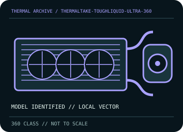

[ INDIVIDUAL COMPONENT // COOLING ]
Thermaltake TOUGHLIQUID Ultra 360
360 mm LCD AIO with a 394 × 120 × 27 mm radiator, triple 120 mm fans, and USB-connected pump display.

IDENTIFICATION: Match the complete model, regional SKU, revision, and supplied socket kit. Similar names and radiator classes do not guarantee identical brackets, dimensions, leads, or warranty terms.
Manufacturer specifications and compatibility
| Exact model / listing | Thermaltake TOUGHLIQUID Ultra 360 |
|---|---|
| Radiator dimensions and thickness | 394 × 120 × 27 mm radiator; allow approximately 52 mm with 25 mm fans plus fittings and tube clearance. |
| Fans | 3 × 120 × 25 mm PWM fans; the Ultra bundle uses its specific RGB fan/control arrangement. Consult the product specification for the exact fan speed profile and connector lead. |
| Pump / block | Pump motor rated 3,200 rpm; block includes a 2.1-inch 480 × 480 LCD. |
| Supported CPU sockets | Intel LGA 1700 / 1200 / 115x / 2066 / 2011 / 1366; AMD AM5 / AM4 / TR4 / AM3-family / FM-family as listed in the model guide. Check the included bracket. |
| Tube length / construction | Sleeved low-evaporation rubber hoses; ensure the installed reach and bend radius suit the case layout. |
| Power, fan, lighting, and display connectors | Use labeled pump power/tach, 4-pin PWM fan wiring, internal USB 2.0 for display/control, and supplied RGB/controller cables. Do not connect proprietary lighting to 12 V RGB. |
| Warranty | Thermaltake warranty coverage and term vary by region and SKU; verify the current local terms for the Ultra 360 product code. |
| Case compatibility | Requires 360 mm radiator mounting and roughly 52 mm fan/radiator stack. Check case tray, display block clearance, tube routing, DIMM/VRM heatsinks, and GPU before installation. |
| Motherboard compatibility | Socket compatibility depends on the included bracket. Internal USB 2.0 is required for LCD software; reserve suitable PWM/pump headers and verify header current limits. |
Warranty, maintenance, and safe installation
Sealed loop: do not open or refill. Disconnect power and restrain fan blades for cleaning; avoid bending radiator fins. Inspect hoses/fittings and stop use if there is leakage, pump noise, or abnormal coolant temperatures. Install Thermaltake software only from its official support source.
- Install only with the model-specific manual and included retention hardware. Do not operate a pump dry or allow tubes to kink or rub against sharp edges.
- After installation, verify pump and fan tachometer/control operation and monitor CPU temperature under a repeatable load before normal service.
- Warranty statements are a reference, not a substitute for current regional terms; preserve the serial number and purchase record and contact the manufacturer for service.
Manufacturer sources
- Thermaltake — TOUGHLIQUID Ultra 360 product specificationsManufacturer radiator, LCD, pump, fan, socket, and wiring specifications.
- Thermaltake — TOUGHLIQUID Ultra 360 manual (PDF)Manufacturer installation and connector guide.
Static catalog reference only. Verify the precise SKU, manual revision, and current local warranty documentation before installation.